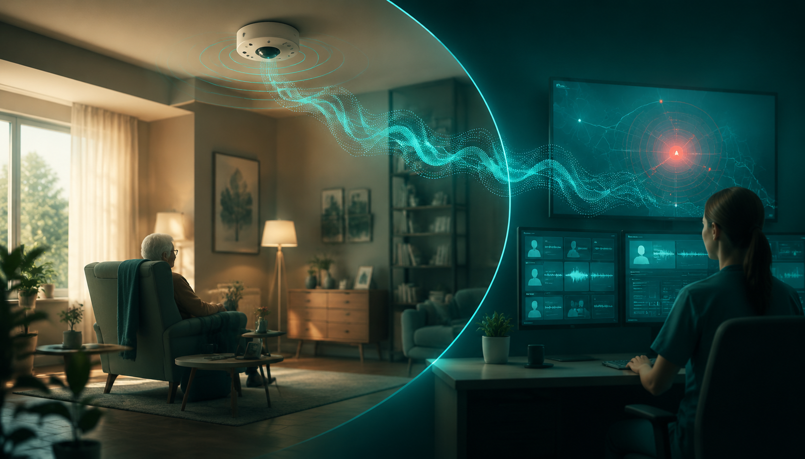

视频监控有盲区
老人摔倒、呼救或烟雾报警可能发生在摄像头遮挡区，单纯画面监控容易漏判。
基于音频感知的智慧居家养老系统
“音达康护”面向独居、高龄、慢病风险老人，把居家声音事件检测、视频跌倒复核、 Web 总控平台和小程序派单连成闭环。系统以声音补足视频死角， 以社区响应补足家庭照护缺口。

背景需求
面向长期独居、慢病风险和社区重点关注老人，系统用声音补足视频盲区， 用分级告警把异常事件交给家属和社区及时处理。
老人摔倒、呼救或烟雾报警可能发生在摄像头遮挡区，单纯画面监控容易漏判。
手环、项链对老人配合度、电量、佩戴习惯要求高，不适合长期无感守护。
门磁、压力、红外等能记录变化，但难判断“日常活动”还是“紧急事件”。
先捕捉呼救、尖叫、报警器、撞击等关键声音，再用视频跌倒检测和社区处置闭环确认。
系统方案
集成摄像模块、麦克风组件、内置处理器，实时采集居家音视频。
TRUNet 音源增强后进入 ATST-Frame 声音事件检测，并结合 YOLOv5 跌倒识别。
综合事件类型、置信度、持续时间、房间位置和住户画像，生成风险等级。
Web 总控端确认，小程序通知家属、社区网格员、志愿者，并记录处置结果。
硬件设备负责采集，移动端负责家属查看和告警接收，总控端负责多户监管和应急派单。
关键技术
声音事件检测负责先发现异常，视频跌倒识别负责复核，风险融合引擎再决定提醒、告警或派单。
输出事件类别、置信度、发生时间戳和证据片段，再与视频跌倒概率共同进入风险融合引擎。
利用帧级音频表示适配尖叫、呼救、烟雾报警器等居家关键事件。
抑制电视声、人声和环境噪声，让弱呼救和报警声更容易被识别。
识别跌倒、长时间静止等行为，为高风险声音提供跨模态复核。
普通提醒、重点关注、紧急告警分别进入家属确认、社区走访和应急联动流程。
测试与前景
围绕模型可靠性、功能有效性、用户可用性和系统联调验证落地能力，覆盖家庭、社区和养老机构场景。
声音事件检测模型与视频跌倒行为检测模型分别验证，覆盖关键异常事件。
真实居家声场中验证呼救、尖叫、烟雾报警器等事件能被正确识别。
验证家属端告警接收、社区端确认派单、响应反馈的完整流程。
家庭无感守护、社区统一监管、养老机构夜间巡护均具备延展空间。